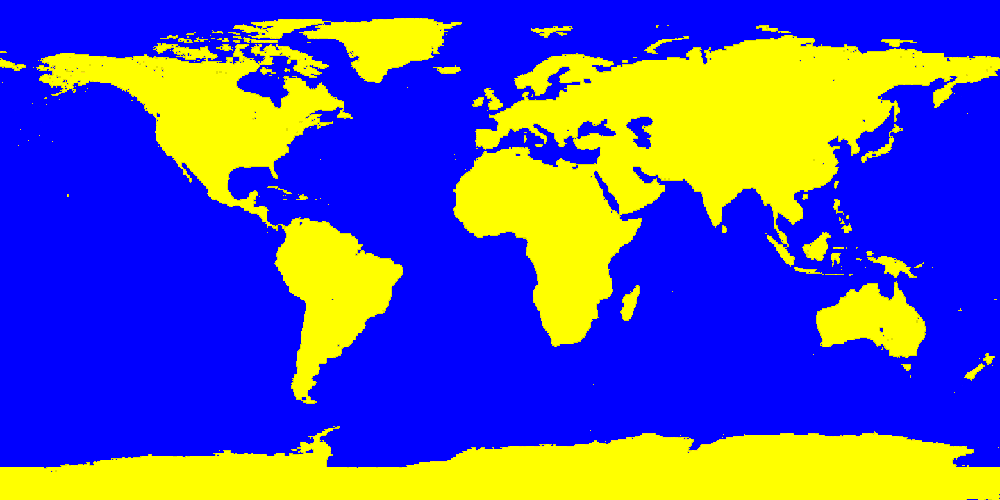

<style>
	body { margin: 0; }
</style>
<script src="https://ajax.googleapis.com/ajax/libs/jquery/1.11.3/jquery.min.js"></script>
<script src="map.js"></script>
<script src="cell.js"></script>
<script src="conway.js"></script>
<script src="spawner.js"></script>
<script src="landmap.js"></script>
<script src="meteors.js"></script>
<script src="meteordata.js"></script>
<script src="script.js"></script>
<body>
<div id="main">

<center><canvas id="canvas"></canvas></center>
</div>

<div id="bottom">
	<center>
		<h1><div id="currentYearBox">Current Year: 1900</div></h1>
		
		<h2>This simulation shows meteors landing at locations and dates<br/> stored in a database from 1900 - 2013. Meteors are not to scale<br/>The colonies are based off Conway's game of life</h2>
	</center>
</div>
</body>
